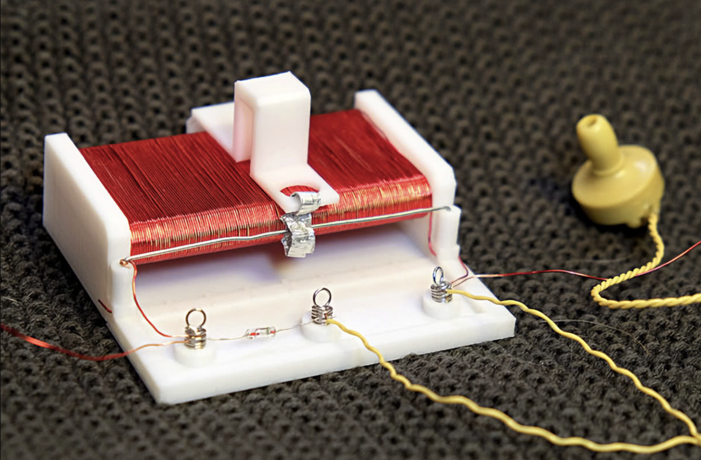
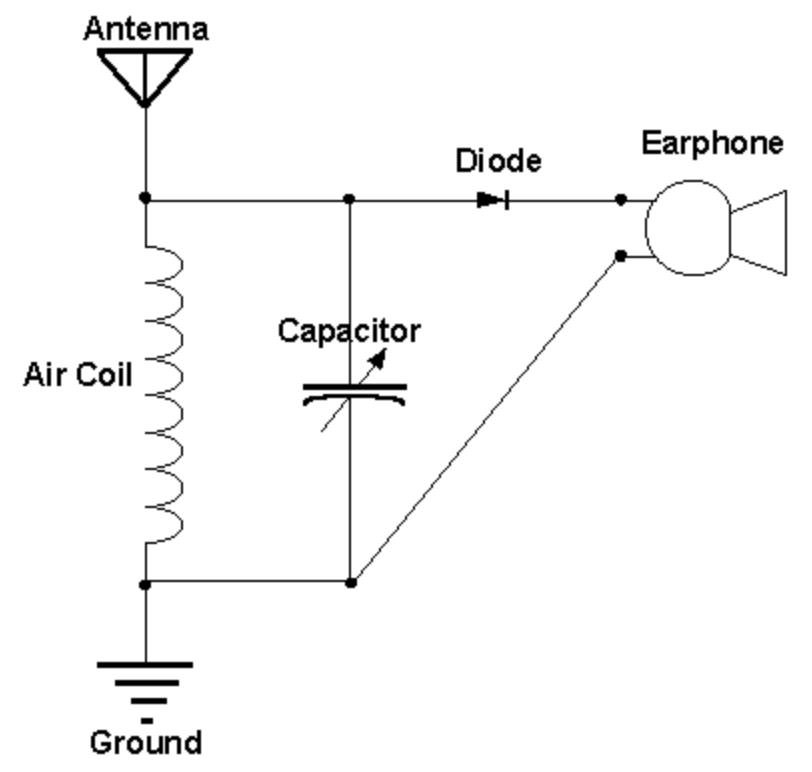

A high school electronics project where I built a simple passive AM radio receiver using basic materials, a 3D-printed structure, and no external power source.
This project was a homemade foxhole radio I built in high school. The goal was to create a simple radio receiver using basic materials and analog electronics principles. The build used a 3D-printed structure, enameled wire, tinfoil, a diode, springs, a paperclip, and a piezoelectric ear speaker.
The radio worked as a passive receiver, meaning it did not require a battery or powered amplifier. Instead, it relied on the energy from nearby AM radio signals and used a simple detector circuit to convert the received signal into audible sound.


A foxhole radio is a very simple crystal-radio-style receiver. The coil of enameled wire acts as an inductor and helps tune into radio-frequency signals. The diode acts as a detector, rectifying the AM signal so the audio portion can be heard through the piezoelectric ear speaker.
The tinfoil, springs, and paperclip were used as part of the physical contact and tuning structure. The 3D-printed frame helped hold the components in place and made the build more repeatable and organized.
The circuit demonstrated the basics of radio reception: antenna coupling, resonance/tuning, rectification, and audio output. Even though the design was simple, it introduced me to how electromagnetic signals can be received and converted into sound using only passive components.
The diode was one of the key components because it allowed the radio to demodulate the AM signal. The piezoelectric ear speaker was useful because it could produce audible sound from a very small signal without needing a powered amplifier.
This project was an early introduction to analog electronics and signal reception. It helped me see that engineering does not always require complex components or advanced tools; even simple materials can demonstrate important concepts like resonance, rectification, and electromagnetic communication.